Some caption text
Fossil fuels at electricity plants
Today I am going to prepare a couple of sample time series datasets for an upcoming project and do some preliminary exploratory data analysis. I currently live in Pittsburgh, and I saw this story about the governor’s plan to cap-and-trade carbon emissions from power plants. How will this effect production in the region? How many carbon-emission could this avert? Will this have any effect on local rates? Fortunately, the Energy Information Administration (EIA) provides a public API and rOpenSci maintains a nice wrapper in R.
In a future post, I will walk through developing a more sophisticated model and use it to answer some more specific questions.
APIs and the R Ecosystem
I have found that R ecosystem has well-maintain packages for interacting with government data APIs–for instance, tidycensus for US Census data, cancensus for Canadian Census data, and the rOpenSci package eia for the Energy Information Agency data. Having a well-designed API wrapper for sifting through public datasets is yeoman’s work and deeply appreciated. All of these implement an interface using tidyverse concepts, like returning the data and the directory structure as tibbles (a variant of a dataframe). Hadley Wickham has a line somewhere that the tidyverse tries to solve the most common analysis bottlenecks, which are more analyst-centered than compute-centered. This is nowhere more true than when working with new APIs, so using API wrappers with tidyverse concepts is a huge help.
Basic EDA
Here I follow Hadley Wickham’s video on preliminary analysis. We start by noting some irregularities in the data.
tidy_aa_data %>% count(year)
#> # A tibble: 20 x 2
#> year n
#> <int> <int>
#> 1 2001 227
#> 2 2002 240
#> 3 2003 226
#> 4 2004 240
#> 5 2005 228
#> 6 2006 216
#> 7 2007 216
#> 8 2008 228
#> 9 2009 228
#> 10 2010 228
#> 11 2011 228
#> 12 2012 228
#> 13 2013 226
#> 14 2014 219
#> 15 2015 216
#> 16 2016 216
#> 17 2017 216
#> 18 2018 216
#> 19 2019 216
#> 20 2020 40
tidy_aa_data %>% count(name_plt)
#> # A tibble: 20 x 2
#> name_plt n
#> <chr> <int>
#> 1 Blossburg 227
#> 2 Brunot Island 225
#> 3 Conemaugh 235
#> 4 Elrama Power Plant 157
#> 5 Hamilton 228
#> 6 Homer City Generating Station 236
#> 7 Hunterstown 227
#> 8 Keystone 236
#> 9 Mountain 228
#> 10 Orrtanna 227
#> 11 Piney 228
#> 12 Portland 228
#> 13 Seward 235
#> 14 Shawnee 228
#> 15 Shawville 233
#> 16 Titus 226
#> 17 Tolna 227
#> 18 Warren 204
#> 19 Wayne 47
#> 20 York Haven 216
tidy_aa_data %>% count(name_plt) %>% count(n)
#> Storing counts in `nn`, as `n` already present in input
#> ℹ Use `name = "new_name"` to pick a new name.
#> # A tibble: 11 x 2
#> n nn
#> <int> <int>
#> 1 47 1
#> 2 157 1
#> 3 204 1
#> 4 216 1
#> 5 225 1
#> 6 226 1
#> 7 227 4
#> 8 228 5
#> 9 233 1
#> 10 235 2
#> 11 236 2So across plants for the same time period, we have different numbers of data points. How are these recorded? Are these NAs, zeros, or something else?
tidy_aa_data %>%
group_by(name_plt) %>%
count(nas = sum(is.na(value)))
#> # A tibble: 20 x 3
#> # Groups: name_plt [20]
#> name_plt nas n
#> <chr> <int> <int>
#> 1 Blossburg 0 227
#> 2 Brunot Island 0 225
#> 3 Conemaugh 0 235
#> 4 Elrama Power Plant 0 157
#> 5 Hamilton 0 228
#> 6 Homer City Generating Station 0 236
#> 7 Hunterstown 0 227
#> 8 Keystone 0 236
#> 9 Mountain 0 228
#> 10 Orrtanna 0 227
#> 11 Piney 0 228
#> 12 Portland 0 228
#> 13 Seward 0 235
#> 14 Shawnee 0 228
#> 15 Shawville 0 233
#> 16 Titus 0 226
#> 17 Tolna 0 227
#> 18 Warren 0 204
#> 19 Wayne 0 47
#> 20 York Haven 0 216
tidy_aa_data %>%
group_by(name_plt) %>%
summarise(mean = mean(value), zeros = sum(value == 0)) %>%
arrange(desc(mean))
#> `summarise()` ungrouping output (override with `.groups` argument)
#> # A tibble: 20 x 3
#> name_plt mean zeros
#> <chr> <dbl> <int>
#> 1 Keystone 9463596. 0
#> 2 Conemaugh 9407419. 0
#> 3 Homer City Generating Station 8686103. 0
#> 4 Seward 2108629. 18
#> 5 Shawville 1886518. 9
#> 6 Elrama Power Plant 1228973. 23
#> 7 Portland 993363. 10
#> 8 Titus 563050. 39
#> 9 York Haven 105430. 0
#> 10 Piney 54959. 0
#> 11 Warren 35210. 38
#> 12 Brunot Island 32585. 66
#> 13 Hunterstown 8146. 7
#> 14 Mountain 8018. 7
#> 15 Blossburg 5651. 12
#> 16 Tolna 4448. 8
#> 17 Wayne 3492. 17
#> 18 Orrtanna 1870. 15
#> 19 Hamilton 1685. 14
#> 20 Shawnee 445. 18Since this is administrative survey data, there’s a good chance that 0 values are non-report values. Where do these show up?
plants <- tidy_aa_data %>%
mutate(my_date = year + (month - 1) / 12)
plants %>% ggplot(aes(my_date, value)) +
geom_line(aes(group = name_plt))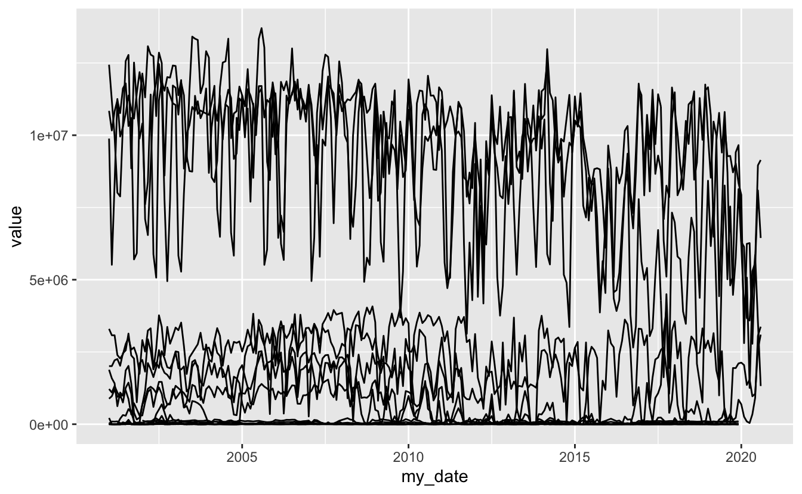
plants %>% ggplot(aes(my_date, value)) +
geom_line(aes(group = name_plt), alpha = 2/10) +
scale_y_log10()
#> Warning: Transformation introduced infinite values in continuous y-axis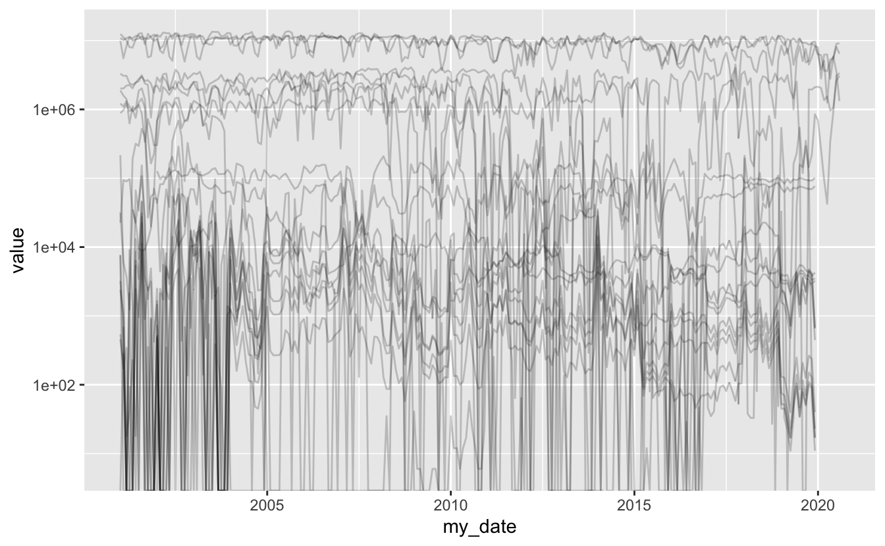
# interpolated
plants %>%
mutate(value = na_if(value, 0)) %>%
fill(value) %>%
ggplot(aes(my_date, value)) +
geom_line(aes(group = name_plt), alpha = 2/10)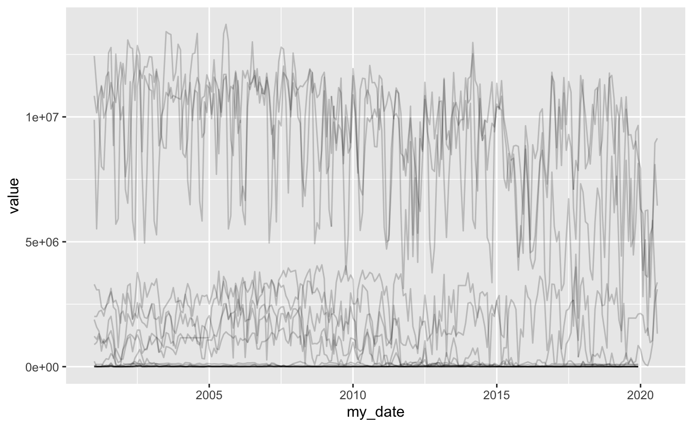
In the log-scaled plot above, these show up as vertical lines. For now, I will interpolate these as missing values by using tidyr::fill() to add the previous value as the missing value. This should be relatively robust assuming that we have no long sequences of zeros.
plants %>%
mutate(is_zero = (value == 0)) %>%
group_by(name_plt,
grp = with(rle(is_zero),
rep(seq_along(lengths), lengths))) %>%
mutate(Counter = seq_along(grp)) %>%
ungroup() %>%
select(-grp) %>%
filter(value == 0) %>%
count(Counter)
#> # A tibble: 24 x 2
#> Counter n
#> <int> <int>
#> 1 1 141
#> 2 2 60
#> 3 3 36
#> 4 4 19
#> 5 5 5
#> 6 6 5
#> 7 7 3
#> 8 8 3
#> 9 9 3
#> 10 10 3
#> # … with 14 more rowsThere are probably more elegant ways of doing this, but from this count we can see that only five times was zero reported for more than five months, and once for 24 months. If this were a high-stakes analysis, we’d like to know why those zeros are there. For now, we will just interpolate.
plants <- plants %>%
mutate(value = na_if(value, 0)) %>%
fill(value)
# interpolated
plants %>%
ggplot(aes(my_date, value)) +
geom_line(aes(group = name_plt), alpha = 2/10)
# interpolated scaled
plants %>%
ggplot(aes(my_date, value)) +
geom_line(aes(group = name_plt), alpha = 2/10) +
scale_y_log10()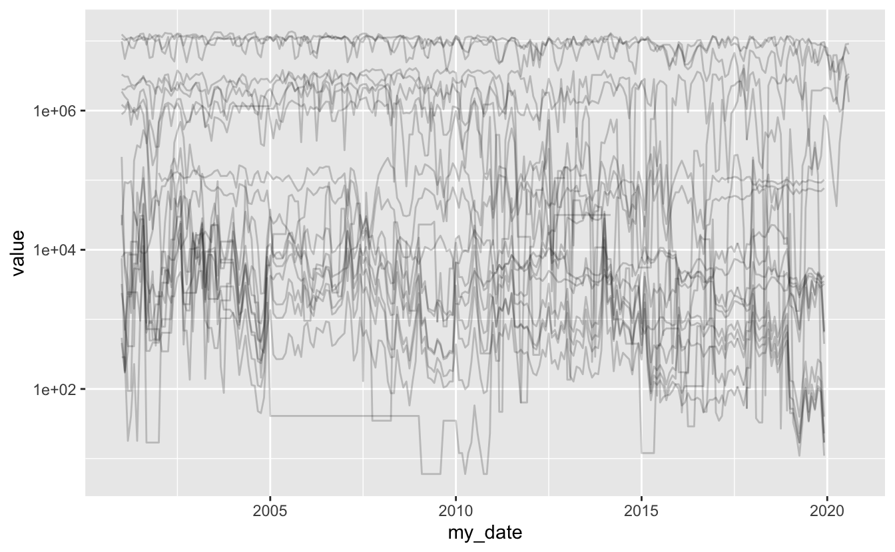
We see that most of the consecutive zeros are in the smaller plants. Since there seems to be three bands of interest, for now, let’s filter out the smallest band crowded at the bottom.
Focus
plants_means <- plants %>%
group_by(name_plt) %>%
summarise(mean = mean(value)) %>%
arrange(desc(mean))
#> `summarise()` ungrouping output (override with `.groups` argument)
ggplot(plants_means, aes(x = mean)) +
geom_histogram()
#> `stat_bin()` using `bins = 30`. Pick better value with `binwidth`.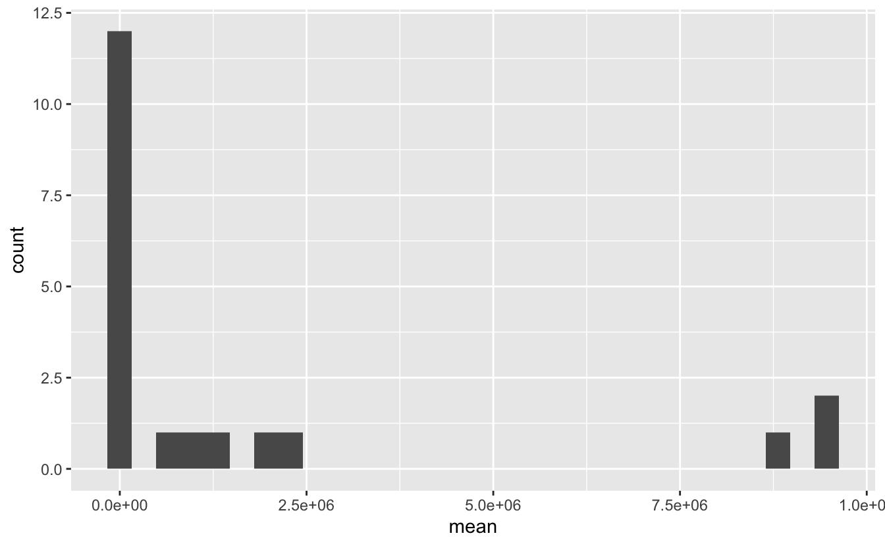
We want to remove that tall bar.
plants_means <- plants_means %>%
mutate(size = ifelse(mean < 5e5, "sm", ifelse(mean < 5e6, "md", "lg")))
plants_means %>%
ggplot(aes(x = mean, fill = size)) +
geom_histogram()
#> `stat_bin()` using `bins = 30`. Pick better value with `binwidth`.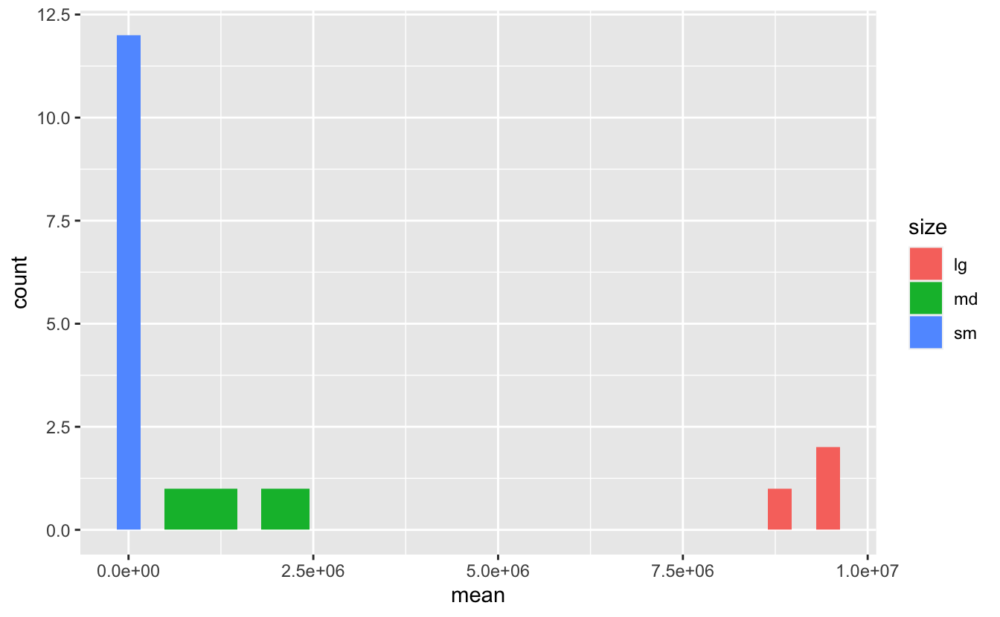
plants_big <- plants %>%
right_join(plants_means %>% filter(size == 'md' | size == 'lg'))
#> Joining, by = "name_plt"
glimpse(plants_big)
#> Rows: 1,786
#> Columns: 11
#> $ units <chr> "MMBtu", "MMBtu", "MMBtu", "MMBtu", "MMBtu", "MMBtu", "MMBtu…
#> $ name_plt <chr> "Elrama Power Plant", "Elrama Power Plant", "Elrama Power Pl…
#> $ lat <chr> "40.251829", "40.251829", "40.251829", "40.251829", "40.2518…
#> $ lon <chr> "-79.918022", "-79.918022", "-79.918022", "-79.918022", "-79…
#> $ value <dbl> 31645, 31645, 31645, 31645, 31645, 31645, 31645, 31645, 3164…
#> $ date <date> 2014-03-01, 2014-02-01, 2014-01-01, 2013-10-01, 2013-09-01,…
#> $ year <int> 2014, 2014, 2014, 2013, 2013, 2013, 2013, 2013, 2013, 2013, …
#> $ month <int> 3, 2, 1, 10, 9, 8, 7, 6, 5, 4, 3, 2, 1, 12, 11, 10, 9, 8, 7,…
#> $ my_date <dbl> 2014.167, 2014.083, 2014.000, 2013.750, 2013.667, 2013.583, …
#> $ mean <dbl> 1241705, 1241705, 1241705, 1241705, 1241705, 1241705, 124170…
#> $ size <chr> "md", "md", "md", "md", "md", "md", "md", "md", "md", "md", …Now that we have a just two groups, let’s take another look at the line plot.
plants_big %>% ggplot(aes(my_date, value)) +
geom_line(aes(group = name_plt)) +
geom_smooth(se = FALSE)
#> `geom_smooth()` using method = 'gam' and formula 'y ~ s(x, bs = "cs")'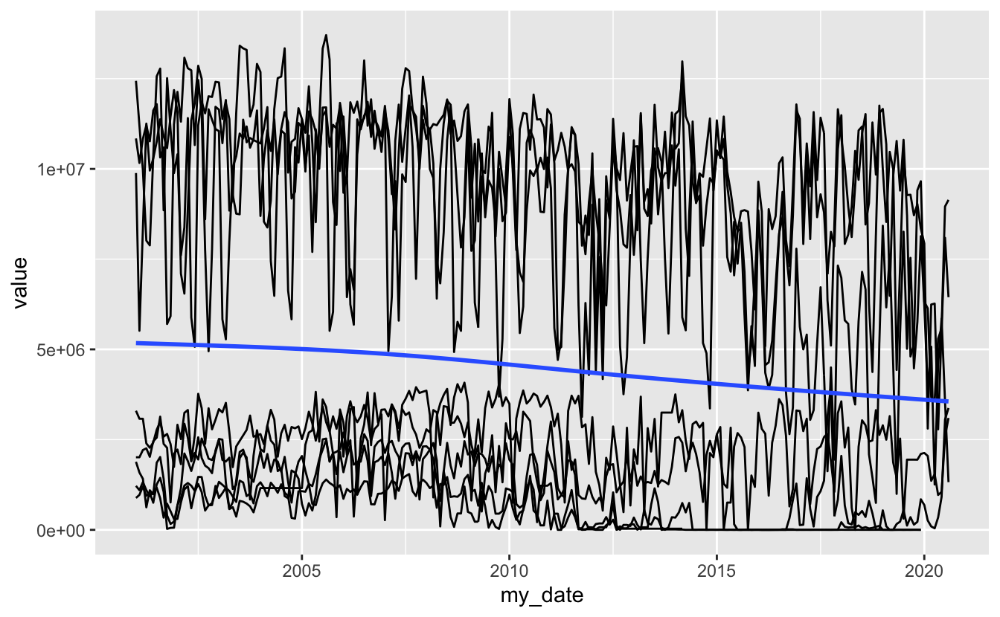
plants_big %>% ggplot(aes(my_date, value, color = size)) +
geom_line(aes(group = name_plt)) +
geom_smooth(se = FALSE)
#> `geom_smooth()` using method = 'gam' and formula 'y ~ s(x, bs = "cs")'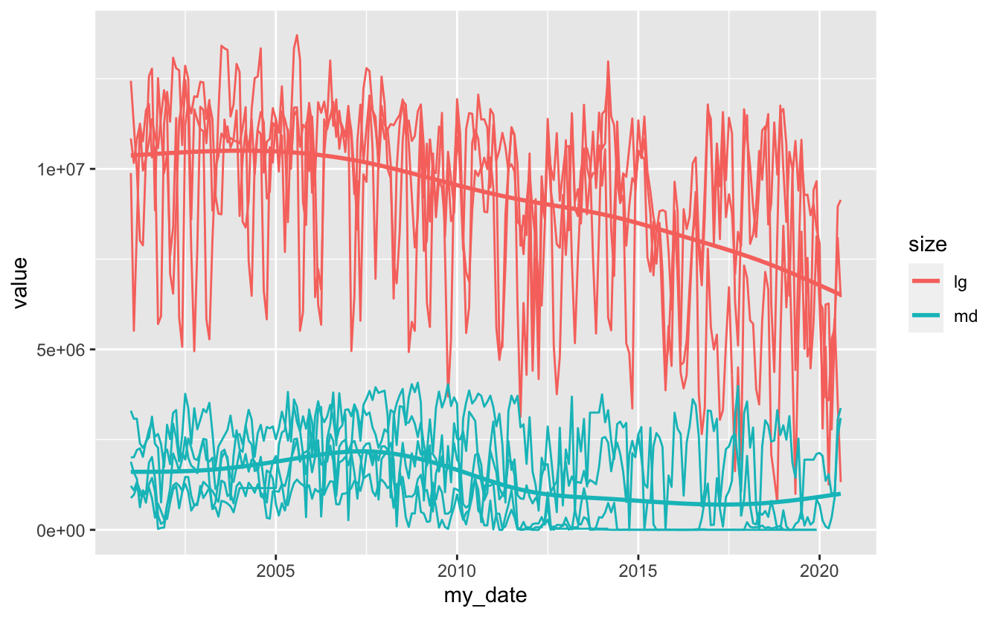
Model
homer <- plants %>% filter(str_detect(name_plt, "Homer"))
homer %>% count(name_plt)
#> # A tibble: 1 x 2
#> name_plt n
#> <chr> <int>
#> 1 Homer City Generating Station 236
homer %>% ggplot(aes(my_date, value)) +
geom_line(aes(group = name_plt)) +
geom_smooth(se = FALSE)
#> `geom_smooth()` using method = 'loess' and formula 'y ~ x'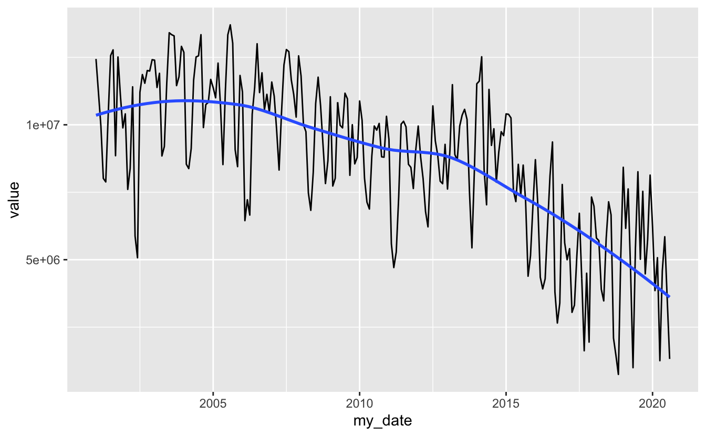
homer %>% ggplot(aes(month, value)) +
geom_line(aes(group = year)) +
geom_smooth(se = FALSE) +
scale_y_log10()
#> `geom_smooth()` using method = 'loess' and formula 'y ~ x'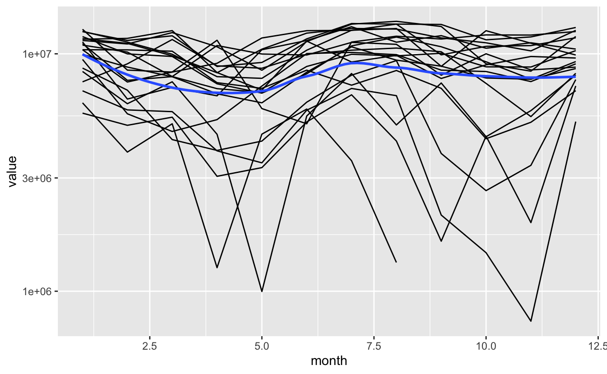
Questions:
- Is this pattern the same everywhere?
- What drives it? Probably the weather, AC units.
library(modelr)
homer_mod <- lm(log(value) ~ factor(month), data = homer)
homer %>%
add_predictions(homer_mod) %>%
ggplot(aes(my_date, pred)) +
geom_line()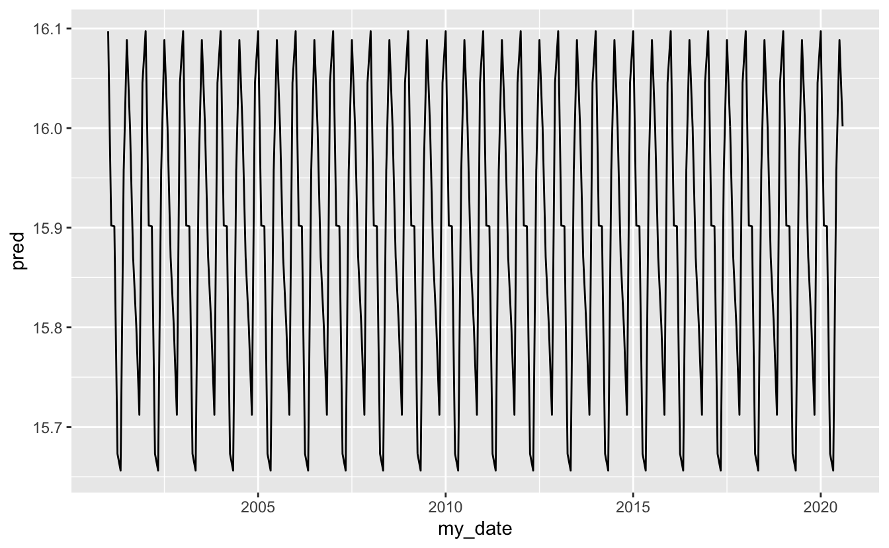
homer %>%
add_residuals(homer_mod) %>%
ggplot(aes(my_date, resid)) +
geom_line() +
geom_smooth(se = FALSE)
#> `geom_smooth()` using method = 'loess' and formula 'y ~ x'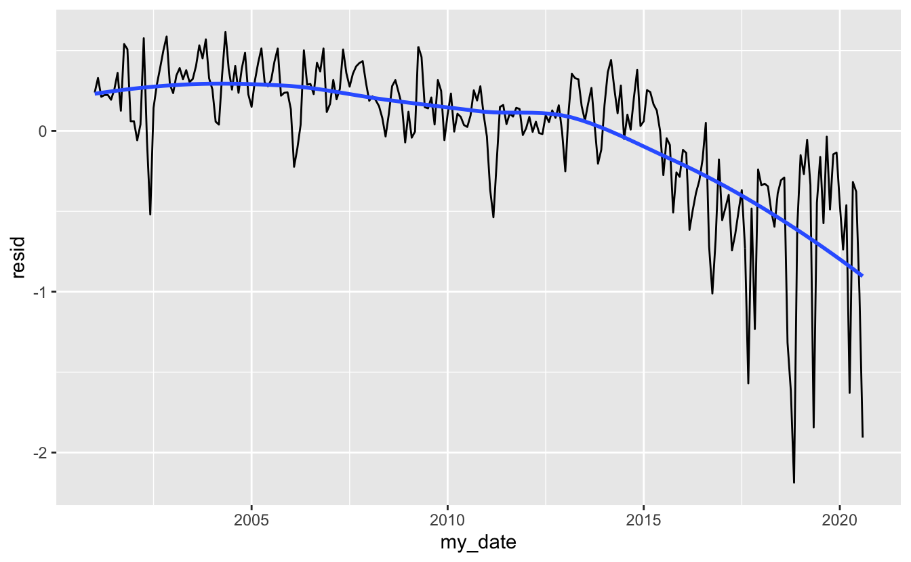
Extend the model to every plant
by_plant <- plants_big %>%
group_by(name_plt) %>%
nest()
plant_model <- function(df) {
lm(log10(value + 1) ~ factor(month), data = df)
}
detrended <- by_plant %>%
mutate(model = map(data, plant_model),
resids = map2(data, model, add_residuals)) %>%
unnest(resids)
ggplot(detrended, aes(my_date, resid, color = size)) +
geom_line(aes(group = name_plt)) +
geom_smooth(se = FALSE)
#> `geom_smooth()` using method = 'gam' and formula 'y ~ s(x, bs = "cs")'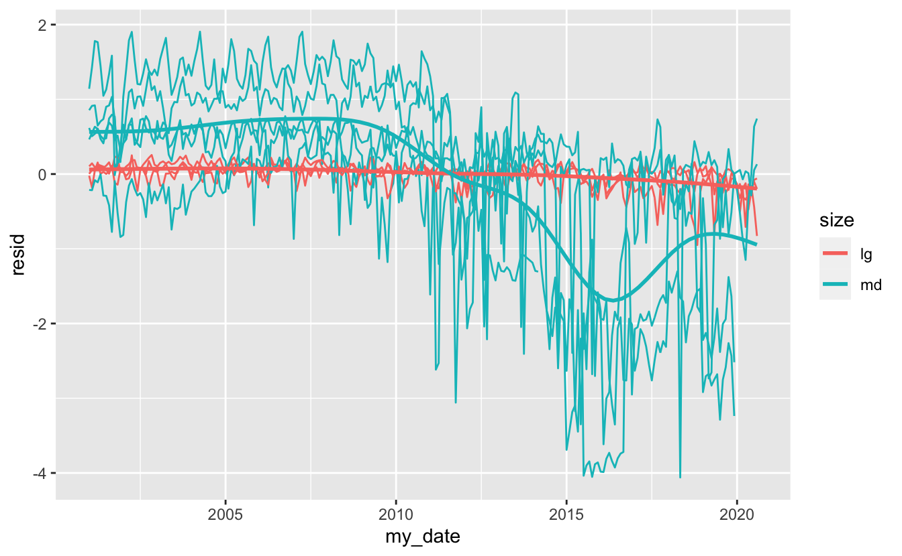
Interesting. If we compare the seasonally detrended plot above to the earlier naive plot, it appears that much of the variation in the large plants was due to yearly variation, while the medium plants were seeing a decline in fuel consumption for since around 2009, only to have this rebound a bit since 2016.